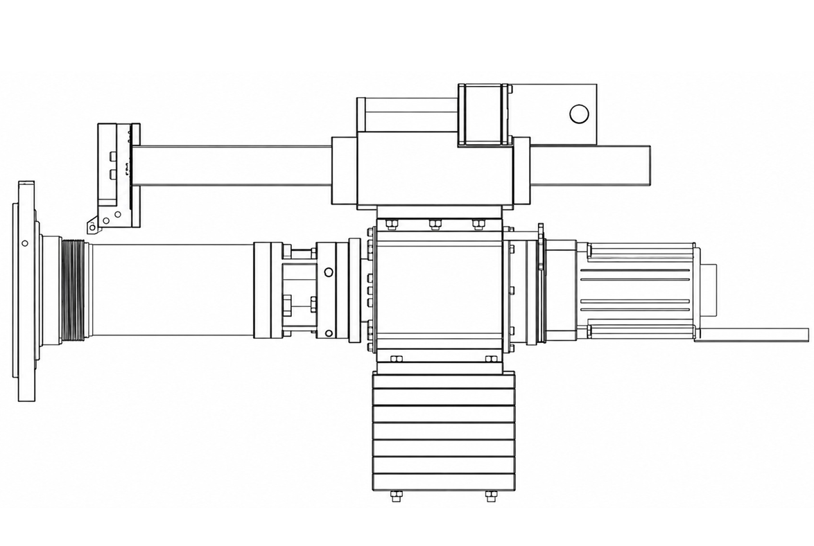

Mobilny serwis - Dojeżdżamy bezpośrednio do Ciebie.
Oferujemy mobilną obróbkę z wykorzystaniem tokarki przenośnej montowanej bezpośrednio od czoła wału.
Urządzenie umożliwia wykonywanie obróbki w zakresie średnic od Ø50 do Ø230 mm oraz długości do 280 mm. Kompaktowa konstrukcja pozwala na przeprowadzenie prac bez konieczności transportowania obrabianego elementu do zakładu produkcyjnego.
